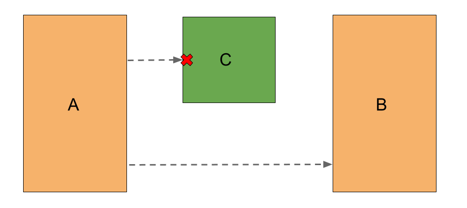
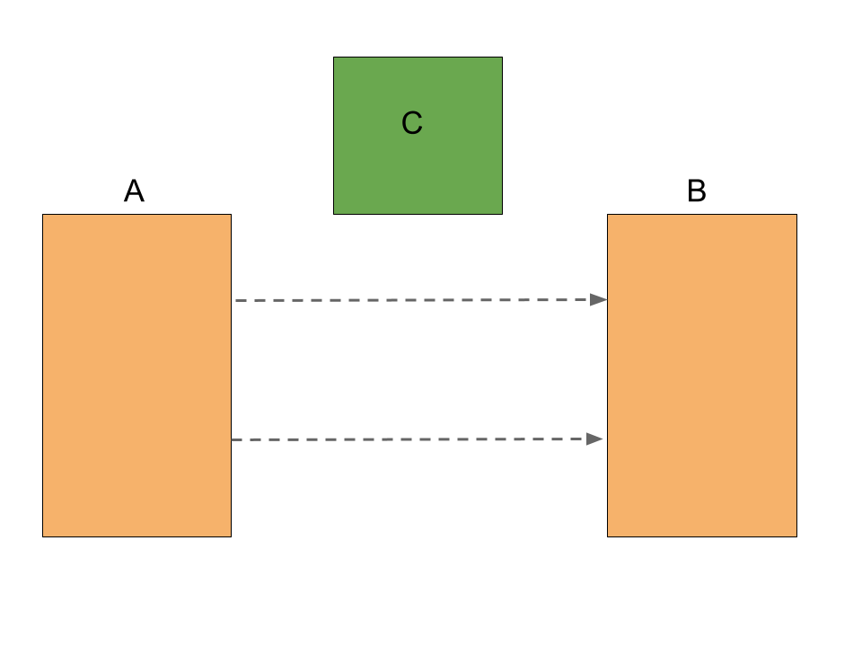

Methodology
Why Adjacency?
This package aims to answer a seemingly simply question: when are two things adjacent?
One definition of adjacency requires geometries to actually touch; if two geometries intersect, then they’re adjacent. This is great for some applications, like determining which countries are adjacent to one other.
But real geospatial data often has gaps between features. How, for example, do we account for island countries? England and France are generally considered to be adjacent, but they don’t intersect. Adjacency in a case like this matters a great deal. Consider how different history and politics would be if these two countries actually shared a land border, or if they were nearby, but with some other country in between?
When it comes to spatial analysis, you can sometimes get away with an intersection to answer a question of adjacency. But that only works with perfect data, where all features are perfectly tiled across the plane, with no gaps in between. In reality, data is often rife with imperfections, and simple intersections, or proximity calculations won’t answer the important questions.
Note
This definition somewhat differs from another geometric concept of adjacency, in which adjacent geometries must be either touching, or share a corner. See this article for more: https://www.e-education.psu.edu/geog586/taxonomy/term/264
Imperfect Solutions
A adjacency analysis must take gaps between features into account. Simplistically, this could be accomplished with ray-casting: you could send a ray out from every source towards every target, and get if the ray intersects with any obstacles in between. But this doesn’t always make sense. Take the example below:

A ray cast from Geometry A will reach Geometry B some of the time, but clearly they are not adjacent, because Geometry C interferes.
We could tweak the scenario slightly, and give the two geometries a full line of sight. In other words, A ray cast from any point to any other point would have a clear path.

But are these two geometries really adjacent? Maybe. This is the grey area that gets to the heart of why this problem is so difficult to define, much less solve.
Voronoi Adjacency
What we really need is a way to erase the gaps between the geometries. If we could only slowly expand each geometry, as though inflating a series of balloons in a box, eventually they would touch, and we could do a simple intersection. That would solve our adjacency problem in a deterministic, objective way. Luckily, we have a way to do just that.
A Voronoi diagram is defined like this, according to the QHull library (upon which geo-adjacency relies).
The Voronoi diagram is the nearest-neighbor map for a set of points. Each region contains those points that are nearer one input site than any other input site.
Another way of thinking of it is to imagine a bubble slowly expanding outwards from each input point, until the bubbles bump into one another, filling the space and creating frontiers between regions.
In this package, scipy.spatial.Voronoi provides an interface to QHull, a C library which can calculate the diagram very quickly.
In this package, we say that two geometries are adjacent if their Voronoi regions intersect. That’s it! It’s a simple, but powerful concept.
It’s actually even simpler than that; we don’t even need to check the regions for intersection. QHull will tell us the vertices that make up the Voronoi regions, and which input points were used to generate them. If two input points share a Voronoi vertex, then their Voronoi regions by definition must intersect.
This optimization is orders of magnitude faster than actually running and intersection. As a result, the runtime of this package is almost entirely bound by the speed of the QHull library’s Voronoi implementation, which is very fast.
Segmentization
There’s a further problem, though: the Voronoi algorithm only works on points. What if our inputs are polygons? How do we get a Voronoi diagram of a polygon?
Step one is obvious enough: Take the Voronoi diagram of all the vertices of each polygon, and union the resulting regions. But what if our input polygon isn’t very detailed. A long rectangle, for example. The Voronoi diagram would be based on only 4 points. What if there is an obstacle region somewhere near the center of the rectangle’s long side? The Voronoi diagram would not account for this.
The solution is to add additional vertices to the input polygons until they are dense enough to produce and accurate diagram.
Getting the right number of vertices takes a little bit of trial and error. If densify_features is True, then the AdjacencyEngine will attempt to calculate a reasonable level of segmentization, as Shapely calls is. This is based on the average segment length of all input features. This is sometimes not enough, though, and it’s advisable to do some experimentation to find a level that generates an accurate result, without compromising performance too much; every additional vertex makes the Voronoi calculation a little more intensive.